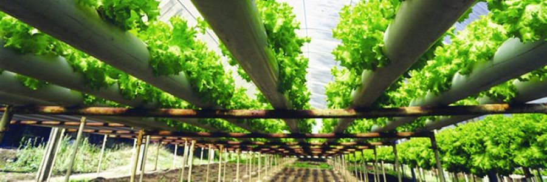

O que é Aquaponia?
Aquaponia é um sistema integrado de produção de alimentos que combina a aquicultura (criação de peixes) com a hidroponia (cultivo de plantas em água). Neste sistema, os resíduos gerados pelos peixes, que normalmente seriam descartados como poluentes, são transformados em nutrientes para as plantas, promovendo um ciclo sustentável e eficiente...

Siga-nos nas redes sociais